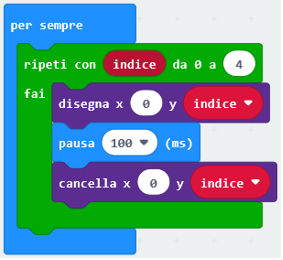
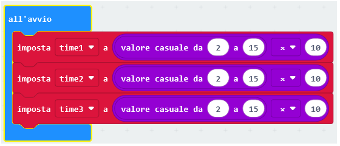
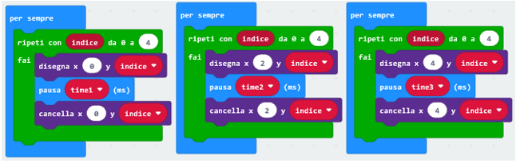
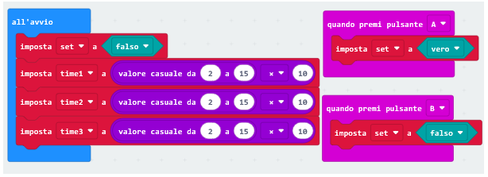
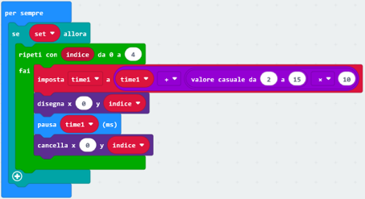
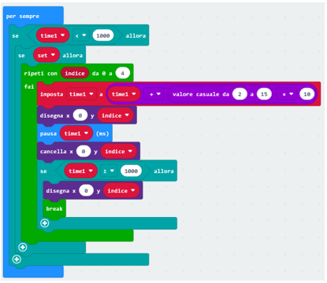
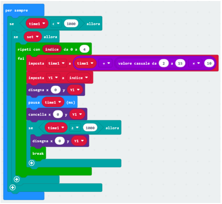

https://makecode.microbit.org/_2haMcrif7Yp4
https://makecode.microbit.org/_L2wDdTX6aewr

https://makecode.microbit.org/_VEKJ7v5c1DWJ
https://makecode.microbit.org/_eMqEAVPx2YF3
Lo scopo consiste nel far allineare su di una stessa riga i tre led che “scendono”.Il pulsante A serve a far partire la giocata, il pulsante B serve a resettare il gioco dopo una giocata e poter quindi giocare una nuova sfida.
| Codice: La sua costruzione | |
|---|---|
| Il primo passo è capire cosa vogliamo ottenere visivamente sul pannello led del microbit, ovvero una luce che percorre una colonna dall’alto verso il basso. In questo caso la colonna usata è quella più a sinistra, corrispondente alla variabile spaziale x sempre a 0; ponendo una coppia plot-unplot, un ciclo for che mi copra le 5 posizioni interessate ed una pausa che mi regola la velocità del movimento, ottengo ciò che ci eravamo prefissi. All’interno di un forever vado a ripetere all’infinito questo ciclo. Per le altre due colonne (x=2 e x=4), ripeto lo stesso procedimento poiché tutti i cicli forever di uno stesso programma vengono processati tutti assieme. |  |
|
Proviamo a far correre un programmino così fatto, vedremo subito che i tre puntini luminosi percorrono paralleli il nostro pannello. Ci accorgiamo da subito che se volessimo sfalsarli, basterebbe porre delle pause di valore diverso, anche di poco. Potremmo dare a ciascuna pausa un nome proprio e dichiararlo all’inizio, indentando time1,time2 e time3 nel OnStart. Per quanto riguarda il valore (ms), non volendo sembrare troppo arbitrari, abbiamo lasciato al caso la questione, sfruttando gli operatori matematici opportuni. https://makecode.microbit.org/_2haMcrif7Yp4 |
| L’operatore moltiplicatore lo usiamo per dare coerenza e praticità alla nostra scelta, potendo settare dei valori casuali con passi non più unitari, che potrebbero risultare troppo poco staccati gli uni dagli altri. Ora proviamo a far correre questo, una bella differenza no?https://makecode.microbit.org/_FvbYXFPd30pt | |
|  | |
|  | A questo punto emerge la necessità di far partire i nostri puntini quando lo decidiamo noi; per ogni ciclo for indentiamo un if, l’evento che lo referenzia è una variabile settata su azione reattiva, quindi useremo un pulsante del microbit, Quando settiamo l’azione, i cicli for iniziano a lavorare, per stopparli ricordiamoci di preparare un pulsante antitetico, in modo di avere il completo controllo del flusso. La variabile sarà di tipo booleano. https://makecode.microbit.org/_L2wDdTX6aewr |
|
|
|  | Siamo a buon punto, ora affrontiamo la prima “challenge”, ovvero far rallentare lo scorrere dei nostri puntini fino a farli fermare, altrimenti li vedremmo scorrere “da qui all’eternità”, per dirla alla James Jones. Procediamo per gradi: innanzitutto rallentiamo il puntino, prendiamo come esempio la colonna x=0, reimpostando ad ogni ciclo il tempo di pausa aggiungendogliene un pochino; time1 uguale a se stesso più un piccolo valore a random, in modo da scostarci ulteriormente da metodi deterministici e dare variabilità alle nostre funzioni. |
| Ora dobbiamo fermare il ciclo in un punto ben preciso. Chi lo decide? La risposta varia in base alla soluzione che voglio adottare e all’archetipo di struttura che ho fin qui creato. In questo caso trovo conveniente lavorare sul tempo di pausa stabilendo che oltrepassata una certa misura (ascritta in un if con operatore di confronto) la potente funzione break mi “sbatte” fuori dal ciclo. L’accortezza è di far disegnare l’ultimo puntino corrispondente alla y settata da indice e di porla ASSOLUTAMENTE prima di break, pena la perdita del puntino. L’intera funzione è indentata in un if ulteriore, con l’operazione di confronto di segno inverso,, per evitare la riscrittura del puntino nella posizione x=0;y=0. Analogo lavoro va fatto anche per i blocchi di codice relativi alle colonne x=2 e x=4, provando col simulatore MakeCode dovrebbe tornarvi tutto. https://makecode.microbit.org/_VEKJ7v5c1DWJ |
 |
| Fatto? Pronti per il rush finale? Bene. Manca solo una cosa, far accorgere il mio microbit che se su una qualsiasi linea mi si fermano i miei tre puntini deve dirmi che ho vinto. La richiesta sembrerebbe alquanto semplice, ma in realtà nasconde un particolare subdolo che solo la conoscenza del modo di operare del microbit può eludere. Facilmente giungiamo a capire di mettere a confronto le coordinate spaziali dei tre puntini relative alle colonne, bene, esse coincidono con la parola indice, rappresentante un numero progressivo e reiterata più volte nei cicli for per “cadenzarne” l’incedere. E’ per tutti e tre i cicli uguale, quindi, fosse solo questo il problema, basterebbe farne tre nominali per colonna e procedere al confronto. Ma esse denotano natura di variabile SOLO all’interno del ciclo for e, quando la funzione break porta fuori, il loro valore viene sempre riportato a 0, per cui, risulterebbero sempre verificate le uguaglianze. |  |
| Sempre presa la colonna x=0 ad esempio, facciamo una cosa molto semplice, definiamo una nuova variabile all’interno del ciclo for, chiamiamola y1, e la impostiamo di valore indicato da indice, cosicchè quando giunge l’agognato momento del break viene estrapolato il valore y senza che venga resettato. Ripetiamo specularmente sui relativi blocchi di codice restanti e procediamo al confronto.
Il gioco è fatto e l’avete fatto voi! https://makecode.microbit.org/_eMqEAVPx2YF3 |
|